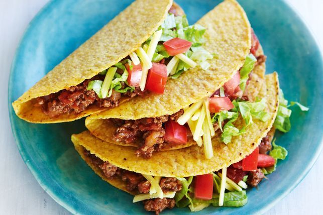

Taco Recipe

Description
In the craving for some tacos but don't want to go out to eat or order doordash just to have your taco be soggy?
Well no worries because this recipe will help alleviate your craving from the comfort of your own home!
This recipe will teach you how to make traditional hard shells tacos by teaching you how to prepare
the meat and also the shells. So enough talking and let get prepping!
Ingredients
- Meat:Beefs/Chicken
- Vegetables:Lettuce and Tomato
- Sauces:Tomato Paste
- Taco Seasoning:Any prepared taco seasoning of your choice
Steps
- :Mash the beef and add some salt to add some flavor to it
- :Use a skillet with olive oil to cook the beef (make sure to remove excess fat)
- :Add taco seasoning with tomato paste and water (continue to break the meat)
- :Reduce heat to medium-low and cook frequently breaking up for 15 mintues
- :Turn off the heat and mince your lettuce and tomato
- :Prepare an iron skillet with a few drop of olive oil and wait until hot. Then heat up on med heat for 30 seconds on each side
- :Prepare your taco with the meat and add your favorite tomato sauce or hot sauce and enjoy!
odin-recipes